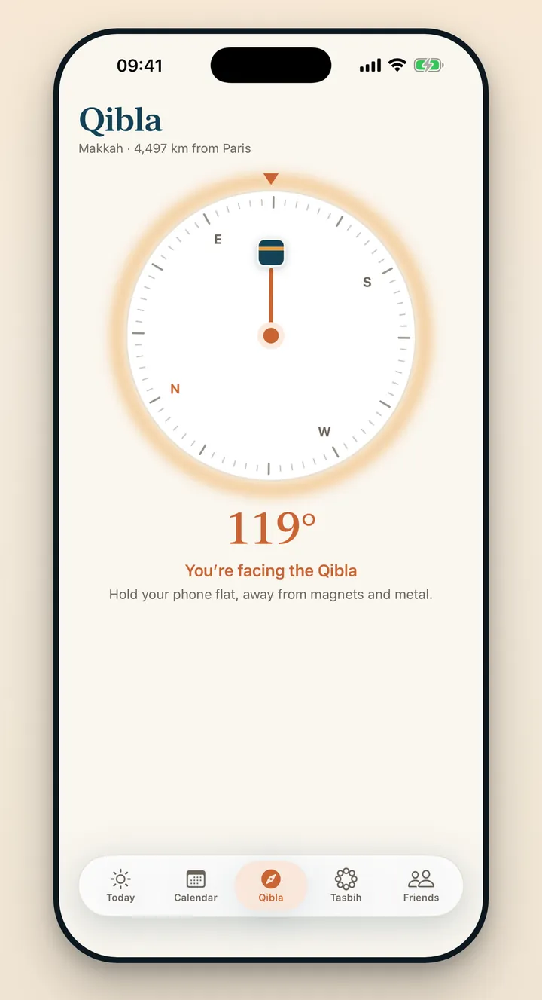
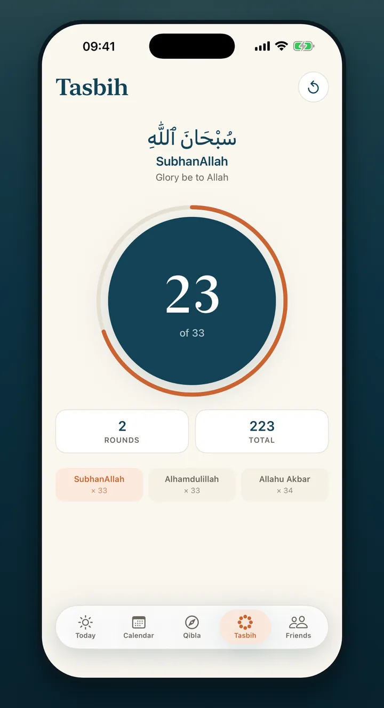
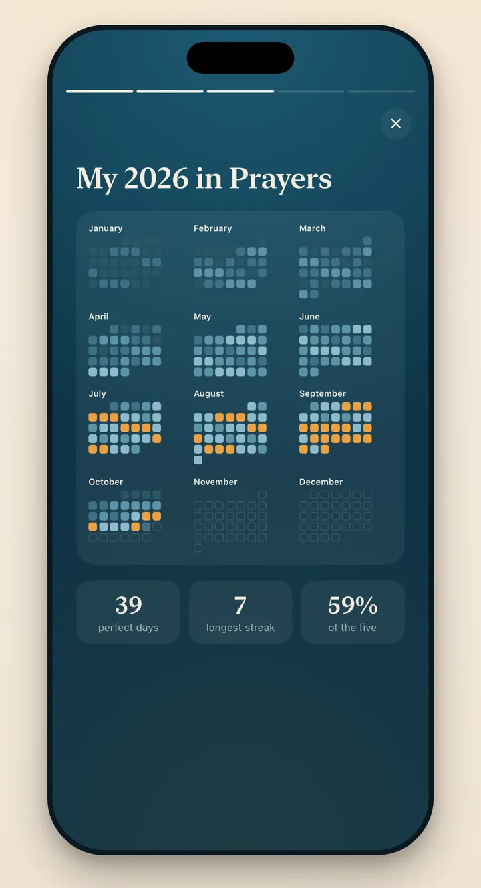
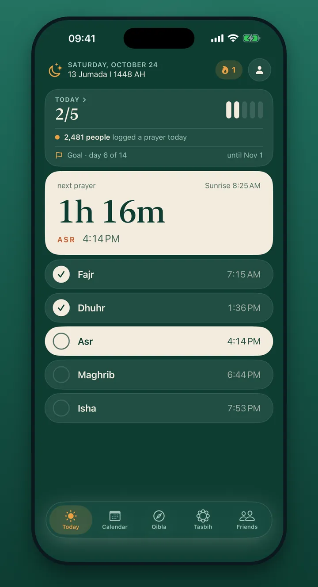

Monthly
$4.99 / month
Billed every month. Cancel anytime.
The salah tracker for iPhone
Prayer times for your city, a gentle reminder before each prayer, and a calendar that fills up, one square at a time, into your year in prayers.


Today
Today shows the five prayers with their times and a countdown to the next one. Tap a prayer once you have prayed it, and the day fills in.
Your calendar
Read a month at a glance, or the whole year on one screen, with your streak, your perfect days and your totals. Days deepen in shade with each prayer, and turn gold when all five are done.
For sisters
Cycle mode marks the days when prayer is not required, so your calendar tells the truth without asking you to explain it.

Share
Turn a week, a month, 90 days, a goal or your whole year into a card or a story, ready for messages and social posts.


Qibla and Tasbih
A compass points to the Kaaba from wherever you are and tells you when you face it. The tasbih counts 33 SubhanAllah, 33 Alhamdulillah and 34 Allahu Akbar after each prayer.

Year recap
At the end of the year, Praylendar looks back with you: your best month, your longest streak, your perfect days and the prayer that grew the most.

Themes Premium
Four app themes, Cream, Emerald, Ramadan and Plum, each with a matching app icon and matching share cards.
Friends
Sign in with Apple to add friends by @username or with your invite link, see how their day is going, and send a gentle reminder when a prayer is still waiting.
Questions
Yes. Tracking, prayer times, reminders, the calendar, goals, Cycle mode, Qibla, Tasbih, sharing, friends and the month widget are free. Premium adds editing of any past day, insights and trends, the year and next prayer widgets, four themes, extra reminder sounds and a badge.
Yes. Times are calculated on your iPhone from your location or a city you choose, with the method your mosque follows. Your location is not sent to Praylendar's servers.
No. Everything works without an account. Sign in with Apple is only needed for Friends.
Cycle mode marks the days when prayer is not required. They are never counted as missed, your streak waits for you, and they stay on your phone.
No. Friends see your profile and a simple count of today's prayers, never your full calendar. They can send you a one-tap reminder to pray, and there is no chat.
English, French, Arabic, Spanish, Turkish, Indonesian, Malay and Urdu, in the app and on share cards.
Free on the App Store, for iPhone. Every prayer you log colors a square.
Download on theApp Store